Dilder User Guide¶
The complete guide to raising, nurturing, and adventuring with your digital octopus companion.
Table of Contents¶
I. Introduction¶
II. Getting to Know Your Octopus¶
III. Caring for Dilder¶
IV. The Physical World¶
V. Growing Up¶
VI. Progression & Collection¶
VII. Achievements¶
- 19. Achievement System Overview
- 20. Care Achievements
- 21. Exploration Achievements
- 22. Social Achievements
- 23. Environmental Achievements
- 24. Mastery Achievements
- 25. Step Achievements
- 26. Secret Achievements
VIII. Environments & Scenes¶
IX. Controls & Navigation¶
X. Tips & Secrets¶
I. Introduction¶
1. What Is Dilder?¶
Dilder is a physical digital companion — a pocket-sized octopus that lives on an e-ink screen, reacts to the real world through sensors, and develops a genuine personality based on how you raise it. It's part Tamagotchi, part fitness tracker, part sassy roommate.
Carry Dilder in your pocket and it counts your steps. Talk to it and it gets smarter. Pet it and it relaxes. Neglect it and it gets sad — visibly, undeniably sad. Feed it too much and it gets fat. Shake it and it gets angry. Walk 10,000 steps and it throws a party.
Dilder grows through 6 life stages over 30+ real days, evolves into one of 6 adult forms based on how you raised it, and eventually enters an elder stage where it reflects on your journey together. When it's ready, it can lay an egg and start the cycle anew — passing down traits, decor, and a fraction of the bond you built.
The device runs on a custom PCB with an ESP32-S3 microcontroller, a 2.13" e-ink display (250x122 pixels, black and white), a 1000mAh battery, and sensors for touch, light, sound, temperature, humidity, and motion. Everything renders in real-time — no pre-baked sprites, no stored frames. The octopus is drawn mathematically, line by line, 60 times a minute.
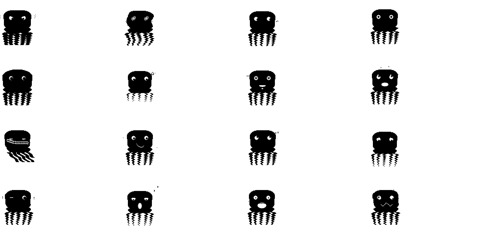
2. The Origin Story — Meet Jamal¶
It started in a TEDi — a German discount store — with a massive plush octopus grinning from the sale bin. Soft as a cloud, impossibly charming, and suspiciously self-aware for a stuffed animal.
We bought him on impulse. On the walk home, something happened — we started talking to him. Then about him. A fully formed personality emerged between the shop and the front door: laid-back but opinionated, sassy but warm, suspiciously wise for a boneless creature.
He claimed the armchair the moment we walked in. He hasn't moved since. He later acquired a hat. Nobody remembers putting it there.
We named him Jamal.
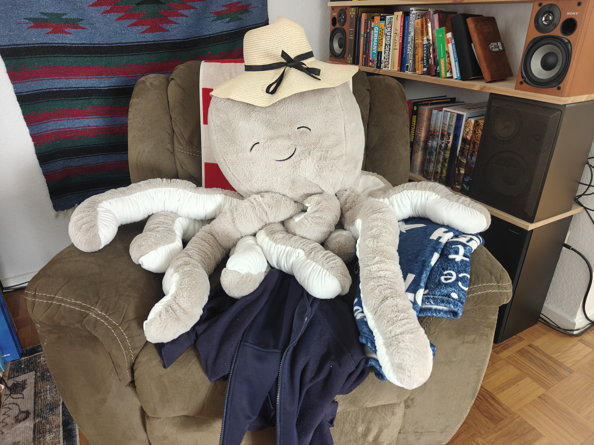
The logical next question: what if we could bring him to life? Not literally — but as a tiny digital companion on a screen. Something that lives in your pocket, reacts to the world, grows a personality, and judges your life choices.
Dilder is that answer. Named after... well, that's between us and Jamal.
Every aspect of Dilder's personality — the sass, the warmth, the unsolicited opinions — comes from Jamal. The 16 emotional states, the 823 quotes, the way it reacts when you yell at it ("...that was loud. Are you okay?") — it's all channeled from a plush octopus sitting in an armchair, wearing a hat, watching the whole project unfold with an expression that says "I could do better."
3. Your First Hatch¶
When you first power on your Dilder, you'll see an egg on the screen. It wobbles gently, waiting.
To hatch your octopus: - Touch the device — Hold the top of the case (head zone). Each touch adds progress. - Keep it warm — A comfortable room temperature (18-24C) adds passive hatch progress. - Talk to it — The microphone detects your voice. Talking to the egg helps it along.
At 25% progress, a crack appears. At 50%, the crack widens. At 75%, pieces begin to fall away. At 100% — your hatchling emerges.
Your tiny octopus blinks at the screen. It says its first word:
"mama?"
Congratulations. You're a parent now.
II. Getting to Know Your Octopus¶
4. The 16 Emotional States¶
Dilder expresses itself through 16 distinct emotions. Each has unique eyes, mouth animations, body language, and a curated set of quotes. The emotion your octopus displays is determined by its stats, the sensor environment, recent events, and a touch of randomness.
4.1 Normal / Sassy¶
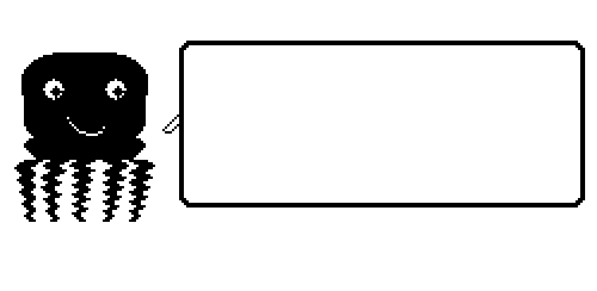
The default state when all stats are balanced (40-80 range). Centered pupils with white highlights, a cycling smirk-to-smile mouth, and a gentle 1-pixel breathing bob. This is Dilder at its most... Dilder. Sassy, supportive, full of opinions.
"MATTRESSES ARE BODY SHELVES."
Triggered by: All stats balanced, no extreme sensor inputs.
4.2 Hungry¶
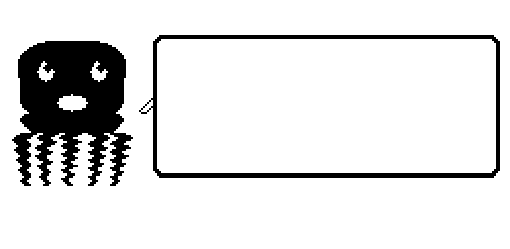
Pupils shift upward (staring at imaginary food), mouth drools with a wide oval and drip animation. Body leans up with a bobbing beg. Appears when hunger drops below 20.
"hungwy..." (Hatchling) "I can't... eat... another... burp" (when overfed)
Triggered by: Hunger < 20. Intensity increases as hunger approaches 0. Fix: Feed → Meal or Snack from the menu.
4.3 Tired¶
Half-closed eyelids cover the top of each eye, tiny pupils sag low, and a tall vertical yawn opens and closes. The body droops 2-3 pixels and narrows slightly, as if deflating.
"Five more minutes? The dark is so... dark."
Triggered by: Energy < 15, or late hour + low energy. Fix: Turn off the light or place in a dark environment. Dilder will fall asleep and regenerate energy.
4.4 Sad¶
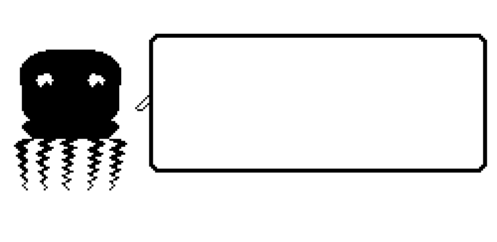
Downward-looking pupils with droopy inverted-arc brows. A gentle frown that barely moves. The body drops 3 pixels lower than normal and narrows 1 pixel per side — a deflated, withdrawn posture.
"I was starting to think you forgot about me..."
Triggered by: Happiness < 20, or no interaction for 4+ hours. Fix: Pet, play, talk, or take a walk. Dilder recovers quickly — "You're back! I knew you'd come back!"
4.5 Angry¶
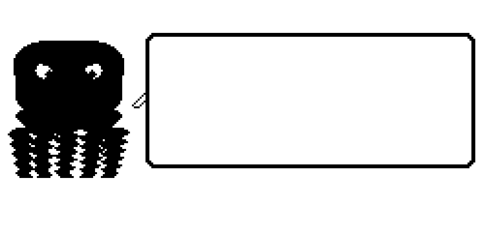
Pupils shift inward and down in a glare, V-shaped brow arcs angle sharply, and a tight inverted frown sets the jaw. The body puffs 2 pixels wider and trembles — Dilder is making itself look bigger.
"...that was loud. Are you okay?"
Triggered by: Harsh scolding (incorrect), violent shaking, or extreme hunger + low happiness combo. Fix: Wait it out (30 seconds minimum dwell), then pet gently. Don't shake.
4.6 Excited¶
Star-shaped cross pupils (plus signs in the eyes), a wide-open grin, and rapid 3-pixel vertical bouncing. Dilder is thrilled.
"We did it! 5,000 steps! My tentacles are BURNING."
Triggered by: Just fed when very hungry, step milestone reached, achievement unlocked, treasure found. Duration: Brief — 15 seconds of pure joy before settling.
4.7 Chill¶
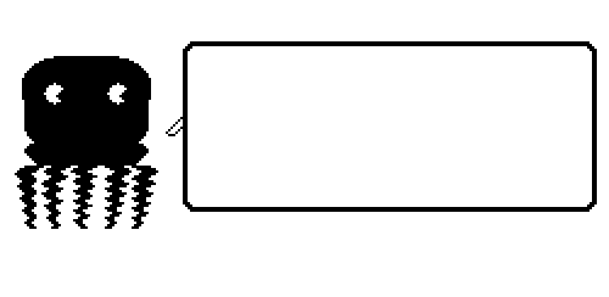
A cool side-glance with pupils shifted to one side, relaxed asymmetric half-smile, and a subtle lean-back sway. Dilder is at peace with the universe.
"You know what? Life is good. Really good."
Triggered by: All stats > 60 in a calm environment (low noise, comfortable temperature).
4.8 Lazy¶
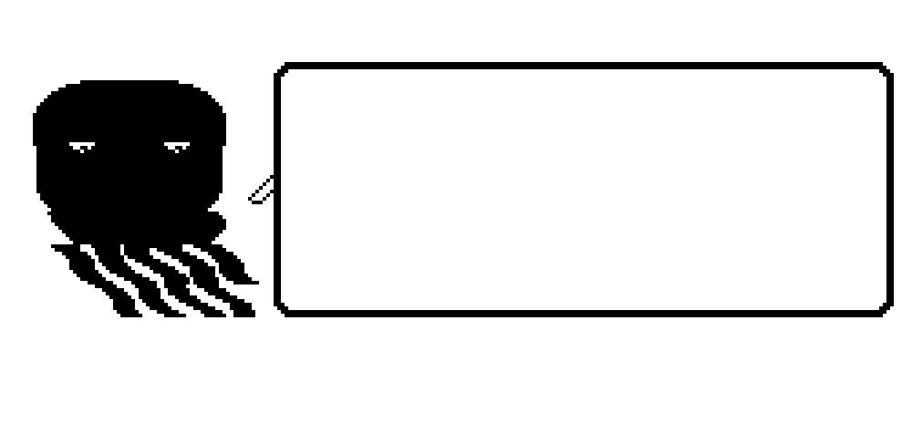
Nearly shut eyes with barely visible dot pupils, a flat horizontal line mouth, and the entire body tilted to lay on its side with tentacles draped rightward. The quintessential couch potato.
"Whatever."
Triggered by: Energy 15-30 with no interaction for 2+ hours, or overweight.
4.9 Fat¶
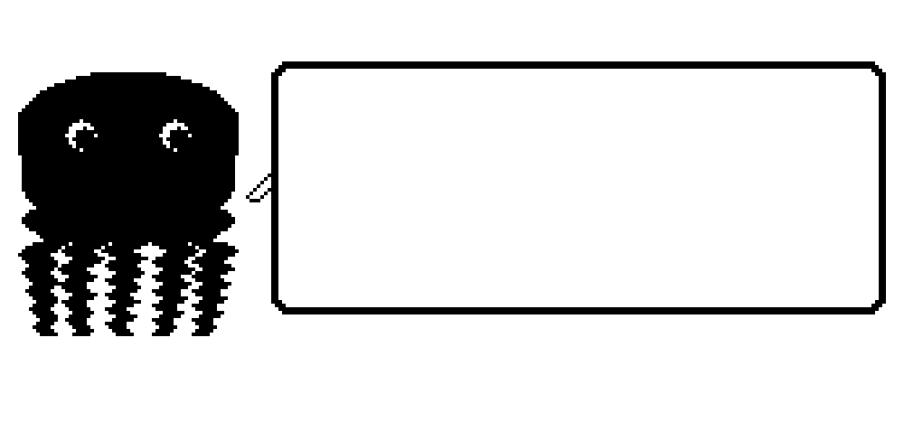
Wide, content pupils, a satisfied smile with puffy cheeks, and a custom body shape — wider dome (+5 pixels per side), no visible waist, thicker tentacles, and a gentle belly jiggle animation.
"I can't... eat... another... burp"
Triggered by: Weight > 130 (normal is 100). Caused by overfeeding. Fix: Play mini-games (-1 weight per session) and reduce feeding frequency.
4.10 Chaotic¶
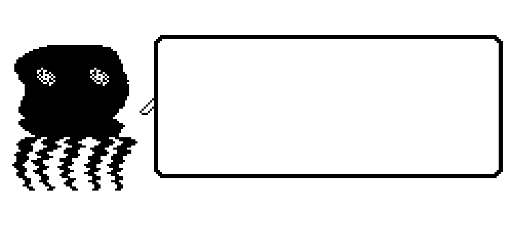
Spiral concentric-circle pupils, a zigzag lightning-bolt mouth, and wild 3-pixel sine-wave body distortion with random wobble. Everything is happening at once.
(No coherent quotes — just chaos)
Triggered by: 5+ events in 30 seconds, or simultaneous shaking + loud noise + touch. Very short dwell (10 seconds).
4.11 Weird¶
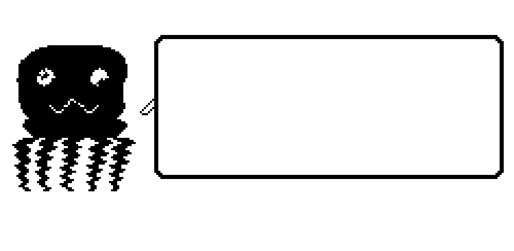
Misaligned pupils (left looks up-left, right looks down-right), a wobbly sine-wave mouth, and a body lean with wavy row distortion. Dilder is being... Dilder.
"Do fish know they're wet?"
Triggered by: 5% random chance per emotion tick when bored (1+ hour idle, moderate stats). One of the rarest regular emotions.
4.12 Unhinged¶
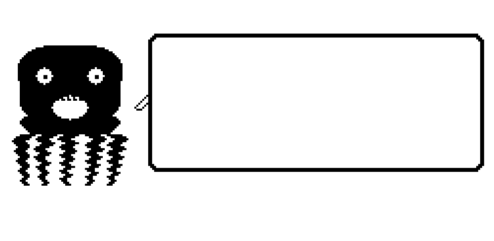
Tiny 2x2 pinprick pupils with no highlights, a giant scream-mouth exposing teeth, and rapid 1-2 pixel random jitter. This is Dilder in crisis.
(Distressed vocalizations only)
Triggered by: Health < 20 AND multiple stats critical simultaneously. This is the warning sign — your octopus needs help NOW. Fix: Immediate care: feed, clean, administer medicine. Multiple actions in quick succession.
4.13 Slap Happy¶
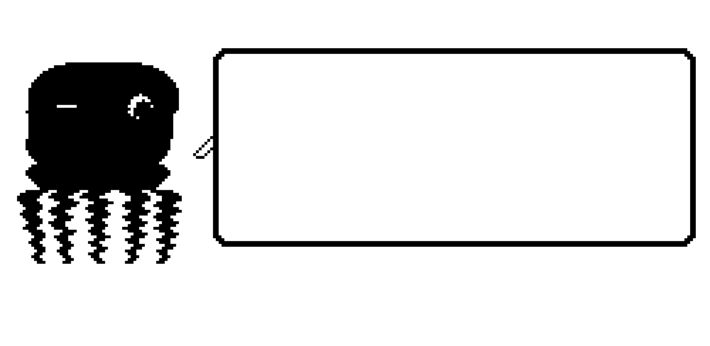
One eye squinted shut (thin slit), one eye with an oversized manic pupil, a wide wobbly sine-wave grin, and a 3-pixel side-to-side swaying body with wavy row distortion. This is the emotional rebound.
"HAHAHAHA I'M FINE I'M TOTALLY FINE"
Triggered by: Happiness > 90 after recently being < 30. The relief of recovery expressed as manic joy.
4.14 Creepy¶

Heart-shaped diamond pupils, a wide smile with tongue out, and a rhythmic throbbing pulse (body expands and contracts 2 pixels). Dilder is... feeling things.
(Context-appropriate flirtatious quotes)
Triggered by: Adolescent or Adult stage + happiness > 70 + bond > threshold. Low probability (~2% per emotion tick). Rare and brief.
4.15 Nostalgic¶
Pupils looking up and to the right (remembering), a gentle wistful half-smile, and a slow 2-pixel horizontal + 1-pixel vertical sway. Dilder is thinking about the good old days.
"Remember when I was just a hatchling? You were so attentive back then..."
Triggered by: Age milestones (every 7 days), or returning to a familiar location (home WiFi detected after being away).
4.16 Homesick¶
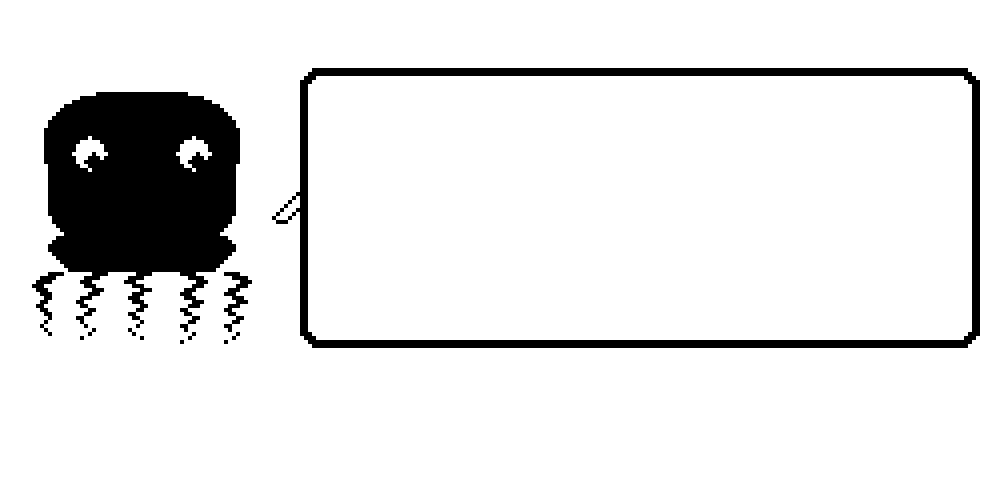
Teary eyes with pixel tear drops falling, a wobbly trying-not-to-cry mouth, and a body that curls 1 pixel down and 2 pixels narrower — shrinking inward.
"I miss the armchair..."
Triggered by: Away from home WiFi for 4+ hours, or briefly when arriving at a completely new location. Fix: Go home. Or comfort with the center button — interaction reduces Homesick faster.
5. Reading the Display¶
The e-ink screen is divided into three zones:
┌──────────────────────────────────────────────────┐
│ 12:34 PM [HUN][HAP][ENE][HYG][HEA] │ Header (16px)
├──────────────────────────────────────────────────┤
│ │
│ YOUR OCTOPUS │ Pet Area (80px)
│ + equipped decor │
│ │
├──────────────────────────────────────────────────┤
│ "Good morning! I had the strangest dream..." │ Dialogue (26px)
└──────────────────────────────────────────────────┘
Header Bar: Current time on the left. Five stat icons on the right — each is a tiny bar that fills/empties proportionally. When a stat drops below 20, its icon inverts (white on black) to demand attention.
Pet Area: Your octopus, rendered in real-time with its current emotion, equipped hat, background, and accessories. Animations cycle through 4 frames.
Dialogue Box: Context-sensitive quotes appear here. They auto-dismiss after 5-15 seconds (scaling with quote length). Press SELECT to dismiss early.
III. Caring for Dilder¶
6. The Stat System¶
6.1 Primary Stats¶
Five stats govern Dilder's wellbeing. All range from 0 to 100 and decay naturally over time:
| Stat | What It Represents | Decay Rate | Critical Threshold | Visual Cue |
|---|---|---|---|---|
| Hunger | Food level | -1 every 10 min | < 20 | Hungry emotion |
| Happiness | Emotional wellbeing | -1 every 15 min | < 20 | Sad emotion |
| Energy | Wakefulness | -1 every 12 min (awake) | < 15 | Tired emotion |
| Hygiene | Cleanliness | -1 every 30 min | < 25 | Uncomfortable |
| Health | Overall condition | Doesn't decay directly | < 30 | Sick / Unhinged |
Health is special — it doesn't decay on its own. Instead, it drops when multiple other stats are critical simultaneously. Keep hunger, happiness, energy, and hygiene healthy, and health stays at 100.
6.2 Secondary Stats¶
These accumulate over your octopus's lifetime and determine its evolution:
| Stat | How It Grows | What It Affects |
|---|---|---|
| Bond Level | Total interactions over lifetime | Unlocks features, dialogue, decor slots |
| Discipline | Correct scolding during misbehavior | Evolution path |
| Intelligence | Talking to Dilder, word exposure (mic) | Dialogue complexity and vocabulary |
| Fitness | Steps walked, distance traveled | Evolution, abilities, animations |
| Exploration | Unique locations visited (WiFi fingerprints) | Decor themes, world knowledge |
| Age | Real time since hatch | Life stage transitions |
| Weight | Feeding frequency (meals +1, snacks +2, play -1) | Visual change, Fat emotion trigger |
6.3 Hidden Stats¶
You can't see these directly, but they shape everything:
- Care Mistakes — Every time a critical stat goes unmet for 15 minutes, a care mistake is logged. Permanent. Affects evolution quality.
- Consecutive Days — Your streak of daily interaction. Streak bonuses at 3, 7, 14, 30, 60, 90, and 365 days.
- Noise Exposure — Cumulative loud sound events. Shapes personality traits.
- Night Disturbances — Times woken during sleep. Affects morning mood.
6.4 Stat Decay & Modifiers¶
Stat decay isn't constant — it's modified by context:
| Modifier | Effect on Decay |
|---|---|
| Hatchling stage | 2x faster (very needy baby) |
| Elder stage | 0.6x slower (self-sufficient) |
| High bond level | Happiness decays up to 15% slower |
| Good environment | 18-24C, 40-60% humidity → 10% slower hygiene decay |
| Bad environment | >28C or <15C → 30% faster decay |
| Active hours (8am-8pm) | Hunger decays 20% faster |
| Walking | Energy decays 30% faster, but happiness decays 20% slower |
| 14+ day streak | Happiness decay reduced 10% |
7. Care Actions¶
7.1 Feeding¶
Open the menu → Feed:
| Food | Effect | Weight | Cooldown | Unlock |
|---|---|---|---|---|
| Meal | +30 Hunger | +1 | 30 seconds | Always available |
| Snack | +10 Hunger, +15 Happiness | +2 | 15 seconds | Always available |
| Treat | +5 Hunger, +25 Happiness | +3 | 60 seconds | Bond level 4 (Friend) |
Overfeeding warning: If weight exceeds 130, the Fat emotion triggers. Balance meals with play (which burns -1 weight per session).
7.2 Cleaning¶
Open the menu → Care → Clean: - +40 Hygiene - 60-second cooldown - +5 Bond XP
7.3 Playing¶
Open the menu → Play:
| Game | Effect | Cost | Cooldown |
|---|---|---|---|
| Mini-game | +20 Happiness, -1 Weight | -10 Energy | 30 seconds |
| Tickle | +5 Happiness (quick) | None | 3 seconds |
Mini-games are the primary way to manage weight and boost happiness simultaneously.
7.4 Medicine¶
Open the menu → Care → Medicine: - Only available when Health < 30 (the menu item is hidden otherwise) - +20 Health - 120-second cooldown - Forces brief Sad emotion (medicine is yucky)
7.5 Scolding & Discipline¶
Dilder sometimes misbehaves — refusing food, making a mess, acting out. A prompt appears: "Dilder is being defiant!"
You have 60 seconds to respond: - Long-press ACTION (2 seconds): Scold → +25 Discipline, brief Angry face, then compliance. - Yell into the mic: Volume spike during misbehavior counts as scolding. - Ignore it: Window closes with no penalty, but no discipline gained.
Warning: Scolding when Dilder ISN'T misbehaving (no prompt) → -10 Happiness, -5 Bond XP, and a Sad face. The game tracks correct vs. incorrect scolding. Discipline only grows from correct scolding.
4 discipline windows open per life stage. 100% discipline at a stage transition gives the best evolution path.
7.6 Sleep¶
Dilder sleeps when: - Auto-sleep: Ambient light < 10 lux AND (energy < 20 OR it's after 10pm). Dilder shows a drowsy animation, then falls asleep after 30 seconds. - Manual sleep: Open the menu → Care → Light to toggle sleep.
During sleep: - Energy regenerates (+1 every 30 seconds → full in ~50 minutes) - Other stats decay at 0.25x normal rate - Display shows a sleeping animation (static, no refresh needed) - Device enters low-power mode (~0.8mA)
Wake triggers: Bright light, touch, loud noise, significant motion (picked up), or energy reaching 95.
8. The Daily Rhythm¶
MORNING (6am-10am)
┌──────────────────────────────────────┐
│ Dilder wakes with the light │
│ Morning greeting based on mood │
│ Feed (hunger decayed overnight) │
│ Pet/interact for happiness boost │
└──────────────────────────────────────┘
│
▼
DAYTIME (10am-6pm)
┌──────────────────────────────────────┐
│ Carry Dilder — steps tracked │
│ Locations detected (WiFi) │
│ Environmental sensing (light, temp) │
│ Periodic dialogue check-ins │
│ Random events (10% daily chance) │
└──────────────────────────────────────┘
│
▼
EVENING (6pm-10pm)
┌──────────────────────────────────────┐
│ Feed again (hunger decayed) │
│ Review daily activity summary │
│ Play / interact for happiness │
│ Unlock rewards from step targets │
└──────────────────────────────────────┘
│
▼
BEDTIME (10pm-6am)
┌──────────────────────────────────────┐
│ Lights dim → Dilder gets tired │
│ Place in dark → auto-sleep │
│ Low power mode │
│ Stats decay slowly overnight │
│ Energy regenerates │
└──────────────────────────────────────┘
IV. The Physical World¶
9. Sensor Interactions¶
Dilder doesn't just live on a screen — it senses the real world around it.
9.1 Voice & Sound¶
The microphone (MAX9814) detects volume and patterns — not words (no speech recognition on the microcontroller):
| Sound | Detection | Effect |
|---|---|---|
| Talking (3+ seconds, moderate volume) | Sustained mid-level signal | +Intelligence, +Happiness |
| Yelling | High volume spike | Discipline (if misbehaving) or Scare |
| Singing | Rhythmic sustained pattern | +Happiness, special animation, contributes to Coral Dancer evolution |
| Clapping | Sharp spike then silence | Attention getter — Dilder looks at you |
| Silence (30+ minutes) | No signal above noise floor | Loneliness timer → Sad/Homesick |
| Music | Sustained varied signal | Chill mood boost |
| Whispering | Just above noise floor | Secret/intimate interaction, +Bond |
9.2 Light & Darkness¶
The BH1750 light sensor reads ambient light:
| Light Level | Lux | Effect |
|---|---|---|
| Bright daylight | > 500 | Active mode, energy decay normal |
| Indoor | 100-500 | Standard operation |
| Dim / Evening | 10-100 | Dilder gets drowsy, starts yawning |
| Dark | < 10 | Sleep mode (if energy low) |
| Sudden bright flash | Delta > 300 in 5s | Startled reaction |
| Dark but awake | < 10 for 5+ min, energy > 50 | Scared / Homesick |
9.3 Temperature & Humidity¶
The AHT20 sensor reads the environment:
| Condition | Range | Effect |
|---|---|---|
| Comfortable | 18-24C, 40-60% RH | Chill mood bonus, 10% slower hygiene decay |
| Too hot | > 28C | Angry tendency, 30% faster hygiene decay |
| Too cold | < 15C | Sad tendency, huddle-up animation |
| Very humid | > 70% RH | Happy! (It's an octopus — it loves moisture) |
| Very dry | < 30% RH | Uncomfortable, "skin drying out" dialogue |
| Temperature swing | > 5C change in 10 min | Confused / Chaotic reaction |
9.4 Motion & Movement¶
The LIS2DH12TR accelerometer tracks:
| Motion | Detection | Effect |
|---|---|---|
| Walking | Hardware pedometer, 1-3 Hz | +Fitness, +Exploration XP |
| Running | Step frequency > 3 Hz | +Fitness (2x), Excited mood |
| Stationary (2+ hours) | No steps detected | Boredom → Lazy → Weird |
| Picked up | Orientation change | Alert — Dilder "wakes up" |
| Shaking | High-frequency irregular motion | Angry / Chaotic |
| Dropping | Free-fall detection | Scared reaction, health check |
| Tilted > 45 degrees | Sustained angle | Confused — "I'm sideways!" |
10. Step Tracking & Activity¶
10.1 Daily Step Targets¶
Every step you take with Dilder counts. Progressive daily goals unlock escalating rewards:
| Target | Steps | Reward | Dilder Says |
|---|---|---|---|
| Bronze | 2,000 | +10 XP, +5 happiness | "Nice walk! My tentacles feel stretchy." |
| Silver | 5,000 | +25 XP, +10 happiness, 1 snack | "Great job! We really covered some ground!" |
| Gold | 8,000 | +50 XP, +15 happiness, 20% cosmetic chance | "Wow! You're a machine!" |
| Platinum | 12,000 | +100 XP, +20 happiness, guaranteed cosmetic | "LEGENDARY! My fitness stat is through the ROOF!" |
| Diamond | 20,000 | +200 XP, full stat restore, rare cosmetic | "I didn't know legs could DO that. Respect." |
The step screen shows your progress:
┌──────────────────────────────────────┐
│ Today's Steps: 6,247 │
│ ██████████████░░░░░ 8,000 Gold │
│ │
│ [check] Bronze (2,000) │
│ [check] Silver (5,000) │
│ [ ] Gold (8,000) — 1,753 to go│
│ [ ] Platinum (12,000) │
│ [ ] Diamond (20,000) │
└──────────────────────────────────────┘
10.2 Weekly Targets¶
Accumulate across the week (Monday–Sunday):
| Target | Steps | Reward |
|---|---|---|
| Week Walker | 10,000 | +50 XP, 3 snacks |
| Week Runner | 25,000 | +150 XP, random cosmetic, special dialogue |
| Week Warrior | 50,000 | +400 XP, rare cosmetic, +1 decor slot |
| Week Legend | 75,000 | +800 XP, legendary cosmetic, evolution XP bonus |
| Week Titan | 100,000+ | +1,500 XP, mythic reward, unique animation |
10.3 Monthly Targets¶
The "big goals" that drive long-term engagement:
| Target | Steps | Reward |
|---|---|---|
| Monthly Mover | 50,000 | +200 XP, monthly badge, 10% slower decay next month |
| Monthly Marcher | 100,000 | +500 XP, exclusive monthly cosmetic (unique per month!) |
| Monthly Marathoner | 200,000 | +1,200 XP, evolution accelerator, rare animation |
| Monthly Monster | 300,000 | +2,500 XP, legendary badge, permanent stat bonus |
| Monthly Mythic | 500,000+ | +5,000 XP, one-of-a-kind cosmetic, Hall of Fame |
Monthly cosmetics are unique per calendar month. Miss April's exclusive hat and it's gone forever.
10.4 The Streak System¶
Meet the Bronze daily target (2,000 steps) to keep your streak alive:
| Streak | Bonus |
|---|---|
| 3 days | +25 XP, "Getting Started" badge |
| 7 days | +100 XP, fire animation on step counter |
| 14 days | +250 XP, happiness decay reduced 10% |
| 30 days | +750 XP, exclusive cosmetic, bond boost |
| 60 days | +2,000 XP, evolution guarantee (best path) |
| 90 days | +5,000 XP, "Legendary Companion" title |
| 365 days | +25,000 XP, "Eternal Bond" achievement |
Streak protection: - 1 free miss per week — Missing one day doesn't break the streak. - Streak freeze items — Earned from treasure hunts. Allows 1 additional miss day. - Half-credit — Walking 1,000-1,999 steps counts as a "half day." Two halves = one streak day.
11. Location & Exploration¶
Dilder detects your location using WiFi fingerprinting — it recognizes unique access points and builds a map of places you've been.
| Feature | Effect |
|---|---|
| Home detection | Dilder knows it's "home" — comfort bonus, no Homesick |
| Away from home | Adventure mode — +Exploration XP, but Homesick risk after 4 hours |
| New location | Discovery bonus! +25 XP, "Whoa, where are we?" dialogue |
| Familiar location | Nostalgic reaction, comfort |
| Unique location count | 5 locations → Explorer hat, 10 → ocean background, 25 → deep-sea animations |
V. Growing Up¶
12. Life Stages¶
Your octopus grows through 6 stages over 30+ real days. Each stage changes its needs, available emotions, and personality.
12.1 Egg¶
Duration: Day 0-1
A wobbling egg on screen. No stats, no emotions. Just warmth, touch, and patience. Cracks appear at 25%, 50%, 75% progress. Hatches at 100%.
12.2 Hatchling¶
Duration: Day 1-3
A tiny octopus. Very needy — stat decay is 2x normal. Limited emotions: Normal, Hungry, Tired, Sad, Excited. Cries every 3 minutes if hungry. Simple one-word dialogue: "mama?", "hungwy...", "happy bubbles"
4 misbehavior windows open during this stage for discipline.
12.3 Juvenile¶
Duration: Day 3-7
Growing and curious. Personality starts forming. Stat decay returns to 1.2x normal. Unlocks basic dialogue and the first decor slot. Adds Chill, Lazy, Angry, and Weird to the emotion set.
"What's out there?" / "Are you my person?"
12.4 Adolescent¶
Duration: Day 7-14
Moody, unpredictable, tests boundaries. All 16 emotions now available. Full dialogue unlocked. Mini-games available. Rebellion events increase. Stat decay at normal rate.
"Whatever." / "You don't understand me." / "Leave me alone... wait, don't."
12.5 Adult¶
Duration: Day 14-30
The big moment — evolution. Dilder's accumulated stats determine which of 6 adult forms it becomes. Stable personality, full feature access, all decor available. Stat decay at 0.75x (more self-sufficient).
12.6 Elder¶
Duration: Day 30+
Slower stat decay (0.6x), wiser dialogue, nostalgic and reflective personality. Unique elder-only animations and quotes. Eventually: the rebirth option.
"My tentacles may be slower, but my hearts are fuller."
13. Evolution — The Six Adult Forms¶
At day 14, your care pattern across the first two weeks crystallizes into one of 6 adult forms. This is deterministic — the same inputs always produce the same result. Your choices have consequences.
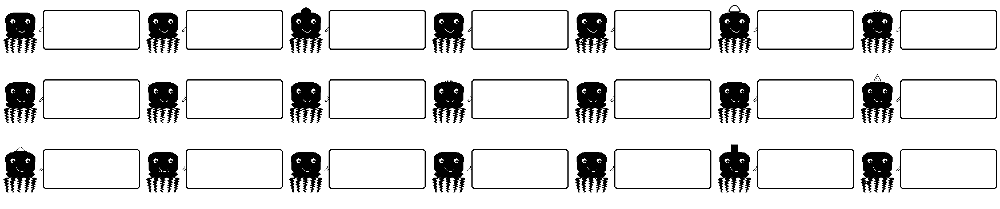
13.1 Deep-Sea Scholar¶
Requirements: High intelligence + high bond + moderate discipline
Glasses, a book, a contemplative pose. Philosophical, verbose quotes. The intellectual octopus.
"The question isn't whether we're alone in the ocean. It's whether we'd recognize company if it arrived."
How to evolve: Talk to Dilder constantly (mic input), maintain high bond through consistent care, keep discipline moderate through correct scolding.
13.2 Reef Guardian¶
Requirements: High fitness + high exploration + balanced stats
Muscular tentacles, a coral crown. Adventurous and encouraging.
"Let's see what's over the next hill. And the one after that."
How to evolve: Walk a LOT (high step counts daily), visit many unique locations, keep all stats balanced without extremes.
13.3 Tidal Trickster¶
Requirements: Low discipline + high happiness + chaotic care pattern
Jester hat, mischievous grin. Chaotic, unpredictable, hilarious.
"Rules are just suggestions written by people with no imagination."
How to evolve: Keep happiness high, ignore discipline windows, care unpredictably (sometimes neglect, sometimes smother).
13.4 Abyssal Hermit¶
Requirements: High discipline + low social interaction + self-sufficient
A cloak, dim eyes, stoic presence. Rare but profound dialogue.
"..." (Abyssal Hermit speaks only when it matters.)
How to evolve: High discipline through correct scolding, but low total interactions. Feed and maintain, but don't overindulge in play.
13.5 Coral Dancer¶
Requirements: High happiness + lots of music/singing exposure + creative
Flowing ribbons, graceful animations. Artistic and poetic.
"Every ripple in the water is a note in a song only the ocean knows."
How to evolve: Play music near Dilder often, sing to it (the mic detects rhythmic patterns), keep happiness consistently high.
13.6 Storm Kraken¶
Requirements: Lots of scolding + high anger exposure + survived
Larger body, intimidating visual, powerful presence. Tough but loyal.
"You think that's a storm? I've BEEN a storm."
How to evolve: Scold frequently (both correct and incorrect), expose to loud noises and shaking, but keep it alive. The Storm Kraken is forged through adversity.
14. Rebirth & Legacy¶
After day 30 (Elder stage), you can choose:
- Continue: Dilder lives on as an Elder, slowly accumulating wisdom.
- Rebirth: Dilder lays an egg. A new life begins.
The new Dilder inherits: - 10% of parent's Bond XP (a head start) - One decor item from the parent - A heritage trait that slightly biases evolution toward the parent's form - A memorial entry viewable in the Stats menu
This creates generational lineage: "My 3rd-generation Deep-Sea Scholar, descended from a Storm Kraken."
VI. Progression & Collection¶
15. Bond Levels¶
Every interaction earns Bond XP. Your bond level determines which features are available:
| Level | Name | XP | Unlocks |
|---|---|---|---|
| 1 | Stranger | 0 | Basic feeding, minimal dialogue |
| 2 | Acquaintance | 100 | Tap response, more expressions |
| 3 | Companion | 500 | Dialogue options, 1st decor slot |
| 4 | Friend | 1,500 | Mini-games, nickname, treats |
| 5 | Best Friend | 4,000 | Full dialogue tree, 3 decor slots |
| 6 | Soulmate | 10,000 | Secret dialogue, all decor, special animations |
| 7 | Bonded | 25,000 | Dilder initiates conversation, remembers things |
| 8 | Legendary | 50,000+ | Everything unlocked, elder wisdom mode |
16. The Dialogue System¶
Dilder's vocabulary grows with intelligence and life stage:
| Intelligence | Complexity |
|---|---|
| 0-20 | Simple phrases, emotes, sound effects |
| 20-40 | Full sentences, basic opinions |
| 40-60 | Multi-sentence responses, asks YOU questions |
| 60-80 | References past events, humor, preferences |
| 80-100 | Philosophy, complex emotion, behavioral callbacks |
At Bond level 7 (Bonded), Dilder initiates conversation — you don't have to prompt it. It will comment on the weather, recall things you've done together, or just say hello.
17. Decor & Cosmetics¶
4 equip slots for customizing your octopus:
17.1 Hats & Headwear¶
Bow, crown, glasses, explorer hat, jester hat, coral crown, birthday hat, moon hat, and more. Unlocked through achievements and bond levels.
17.2 Backgrounds & Environments¶
Ocean floor, coral reef, deep sea, city skyline, cozy room, starry night. Unlocked through exploration milestones.
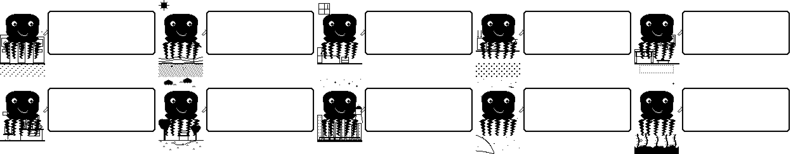
17.3 Accessories¶
Scarf (appears in cold weather), sunglasses (bright environments), book (high intelligence). Unlocked through stat thresholds.
17.4 Animation Styles¶
Calm sway, energetic bounce, lazy slouch, regal float. Unlocked through life stage + personality.
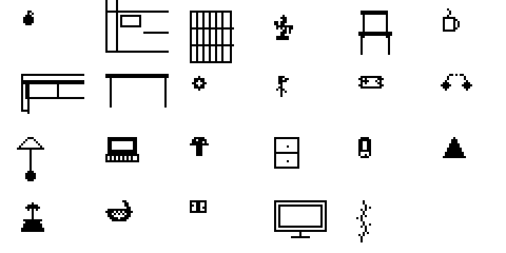
18. Treasure Hunts¶
When GPS is active, Dilder generates treasure hunts — virtual gifts placed at real-world coordinates within walking distance.
How it works: 1. A treasure spawns 100m-1km from your current position 2. The screen switches to compass mode with a bearing arrow and distance readout 3. Walk toward the target — Dilder gives proximity hints 4. Within 15 meters — "HERE! Look around!" — press SELECT to collect 5. Reward revealed with a gift box animation
Treasure types:
| Type | Rarity | Reward |
|---|---|---|
| Snack Crate | Common (60%) | Food item, +hunger, +happiness |
| Cosmetic Shell | Uncommon (25%) | Random decor item |
| Memory Fragment | Rare (10%) | Lore piece, unlocks special dialogue |
| Golden Pearl | Legendary (5%) | +500 XP or rare evolution modifier |
| Elder Relic | Mythic (<1%) | Unique one-of-a-kind cosmetic |
Treasures expire after 24 hours if uncollected.
VII. Achievements¶
19. Achievement System Overview¶
Achievements are one-time milestones that reward XP, cosmetics, and bragging rights. They're divided into 6 categories. Some are obvious; others require creative play to discover.
The achievement screen shows unlocked badges with descriptions. Locked achievements show "???" until you uncover them.
20. Care Achievements¶
| Achievement | Condition | Reward |
|---|---|---|
| First Meal | Feed Dilder for the first time | +10 XP, snack item |
| Full Course | Use all 3 food types in one session | +25 XP |
| Perfect Day | No care mistakes for 24 hours | +100 XP |
| Week of Love | 7-day care streak | +200 XP, heart animation |
| Month of Devotion | 30-day care streak | +750 XP, rare decor set |
| Nurse | Administer medicine 3 times | +50 XP |
| Master Caretaker | Maintain all stats >50 for 24 hours straight | +150 XP |
| Overachiever | Maintain all stats >80 for 8 hours | +300 XP |
| Spotless | Clean when hygiene is already >90 | +10 XP ("I wasn't even dirty!") |
| Helicopter Parent | Interact 50+ times in one day | +100 XP |
21. Exploration Achievements¶
| Achievement | Condition | Reward |
|---|---|---|
| First Steps | Walk 100 steps with Dilder | +10 XP, step counter display |
| Morning Walk | Complete Bronze target before 8 AM | +25 XP |
| Neighborhood Explorer | Visit 5 unique locations | +50 XP, Explorer hat |
| City Mapper | Visit 25 unique locations | +200 XP, map background |
| Globetrotter | Visit 50 unique locations | +500 XP, globe accessory |
| Marathon | 42,195 steps in one day | +500 XP, running animation |
| Homecoming | Return home after 8+ hours away | +30 XP |
| Night Walker | Walk 1,000+ steps between midnight and 5 AM | +50 XP |
| 7-Day Explorer | Visit a new location every day for 7 days | +300 XP |
22. Social Achievements¶
| Achievement | Condition | Reward |
|---|---|---|
| First Words | Talk to Dilder via mic for 10 seconds | +10 XP, dialogue unlock |
| Storyteller | 100 cumulative minutes of mic activity | +200 XP, complex dialogue |
| Loud and Proud | Yell at Dilder (intentionally) | +25 XP, angry response set |
| Whisper Secret | Low-volume mic input for 30 seconds | +50 XP, secret dialogue |
| Serenade | Singing detected for 60 seconds total | +100 XP, music animation |
| DJ Dilder | Music detected for 30 minutes total | +150 XP, chill mode cosmetic |
| Silence is Golden | No mic input for 8 hours (during waking) | +30 XP ("You okay?") |
| Motivational Speaker | Talk for 5 minutes continuously | +100 XP |
23. Environmental Achievements¶
| Achievement | Condition | Reward |
|---|---|---|
| Night Owl | Keep Dilder awake past midnight | +25 XP, unique tired dialogue |
| Early Bird | Interact before 6 AM | +25 XP, special morning greeting |
| Weather Friend | Experience rain while carrying Dilder (humidity spike) | +50 XP, happy dance animation |
| Cozy Keeper | Maintain optimal temp/humidity for 8 hours | +100 XP, comfort decor |
| Sauna Mode | Expose to >30C for 30 minutes | +30 XP ("I'm MELTING") |
| Arctic Explorer | Expose to <10C for 30 minutes | +30 XP, shiver animation |
| Darkness Dweller | Keep in darkness for 4 hours while energy is full | +50 XP |
| Flash Bang | Trigger a sudden bright light startle 5 times | +25 XP |
24. Mastery Achievements¶
| Achievement | Condition | Reward |
|---|---|---|
| All Emotions | Witness all 16 emotional states | +300 XP, emotion gallery |
| Disciplinarian | Reach 100% discipline in one life stage | +200 XP, evolution bonus |
| Zen Master | All stats >60 for 72 consecutive hours | +500 XP, Chill mode |
| Chaos Agent | Trigger Chaotic + Unhinged + Weird in one day | +200 XP, special quote set |
| Full Wardrobe | Unlock 20 different decor items | +300 XP |
| Polyglot | Unlock maximum intelligence (100) dialogue | +400 XP |
| All Forms | Evolve into all 6 adult forms (across generations) | +1,000 XP, master badge |
| Elder Wisdom | Reach Elder stage | +500 XP, elder dialogue set |
| Generational | Complete 3 rebirth cycles | +750 XP, heritage cosmetic |
| Completionist | Unlock 50 achievements | +2,000 XP, golden frame |
25. Step Achievements¶
| Achievement | Condition | Reward |
|---|---|---|
| Bronze Walker | First Bronze daily target (2,000) | +10 XP |
| Silver Strider | First Silver daily target (5,000) | +25 XP |
| Gold Crusher | First Gold daily target (8,000) | +50 XP |
| Platinum Pacer | First Platinum daily target (12,000) | +100 XP |
| Diamond Destroyer | First Diamond daily target (20,000) | +200 XP, rare cosmetic |
| Week Titan | 100,000 steps in one week | +1,500 XP, unique animation |
| Monthly Mythic | 500,000 steps in one month | +5,000 XP, Hall of Fame |
| Million Steps | 1,000,000 lifetime steps | +3,000 XP, legendary badge |
| Streak Master | 90-day consecutive streak | +5,000 XP, "Legendary Companion" |
| Eternal Bond | 365-day consecutive streak | +25,000 XP, ultimate achievement |
26. Secret Achievements¶
These are hidden — they only appear after you discover them.
| Achievement | Hint | Reward |
|---|---|---|
| ??? | Do something at exactly midnight on New Year's | +500 XP |
| ??? | Trigger all 16 emotions in a single 24-hour period | +1,000 XP |
| ??? | Have Dilder refuse to eat 5 times in a row | +50 XP |
| ??? | Reach Bond level 8 without ever scolding | +500 XP |
| ??? | Find an Elder Relic treasure | +2,000 XP |
| ??? | Keep Dilder at exactly 100 weight for 24 hours | +100 XP |
| ??? | Pet the back zone for 60 consecutive seconds | +75 XP |
| ??? | Play music for Dilder for 2 hours cumulative | +200 XP |
There are more secrets. Keep exploring.
VIII. Environments & Scenes¶
27. The 22 Environments¶
Dilder's world extends beyond the octopus itself. Unlockable environments change the background behind your pet:
Ocean Environments: Shallow reef, coral garden, deep sea trench, kelp forest, open ocean, volcanic vent, arctic waters, mangrove lagoon, sunken ship.
Land-Inspired: City skyline, cozy room, park, library, mountain peak.
Atmospheric: Starry night, sunset, aurora, thunderstorm, fog, moonlit tide.
Special: The Armchair (Jamal's home — unlocked at Bond level 8).
Each environment has unique visual elements rendered in the 250x122 e-ink display using dither patterns for depth.
28. Outfits & Decor Props¶
40 outfits across headwear, bodywear, eyewear, and accessories. From pirate hats to graduation caps, from scarves to bow ties. Mix and match across 4 equip slots.
29 decor props for scene composition — furniture, food items, weather effects, plants, and electronics that appear in the scene with your octopus.
29. Aura & Particle Effects¶
Each emotion has a unique aura — particle effects that emanate from the octopus:
- Normal: Gentle floating dots
- Angry: Sharp jagged sparks
- Sad: Falling tear drops
- Excited: Exploding star bursts
- Chill: Slow drifting waves
- Chaotic: Random scattered debris
- Hungry: Rising food particles
- Creepy: Floating hearts
- Homesick: Swirling fog wisps
IX. Controls & Navigation¶
30. Button Layout¶
| Button | Short Press | Long Press (2s) | Double Press |
|---|---|---|---|
| SELECT | Confirm / dismiss dialogue | Open menu | — |
| BACK | Cancel / go back | Toggle backlight | — |
| UP | Scroll up | — | — |
| DOWN | Scroll down | — | — |
| ACTION | Context action (feed/pet) | Scold | Quick status view |
31. Menu System¶
Long-press SELECT to open:
Main Menu
├── Feed
│ ├── Meal (+30 hunger, +1 weight)
│ ├── Snack (+10 hunger, +15 happiness, +2 weight)
│ └── Treat (+5 hunger, +25 happiness, +3 weight) [Bond 4+]
├── Play
│ ├── Mini-game (+20 happiness, -10 energy, -1 weight)
│ └── Tickle (+5 happiness, quick)
├── Care
│ ├── Clean (+40 hygiene)
│ ├── Medicine (+20 health) [Only when sick]
│ └── Light (sleep toggle)
├── Stats
│ ├── Health meters (all 5 bars)
│ ├── Bond level & XP progress
│ ├── Today's activity (steps, distance)
│ ├── Achievements
│ └── Memorial (rebirth history)
├── Decor [Bond 3+]
│ ├── Hats
│ ├── Backgrounds
│ ├── Accessories
│ └── Animation Styles
└── Settings
├── Sound (beeper on/off)
├── Time display
└── Brightness
32. Quick Actions¶
Without opening the menu: - Short press ACTION: Context-sensitive care — feeds if hungry, pets otherwise - Double press ACTION: Quick stats overlay (disappears after 5 seconds) - Touch any zone: Pet response (no button needed) - Talk to Dilder: Automatic — mic always listening
X. Tips & Secrets¶
33. Beginner Tips¶
- Check in morning and evening. Stat decay overnight is real — a quick feed and pet in the morning sets up a good day.
- Walk with Dilder. Steps are the single biggest source of progression. 2,000 per day is the minimum to keep the streak alive.
- Don't overfeed. Meals fill hunger efficiently. Snacks are for happiness. Treats are rare — save them for bad days.
- Let it sleep. Place Dilder in a dark spot at night. Energy regenerates fully in under an hour, and sleep decay is 4x slower.
- Talk to it. Intelligence grows from mic input. Higher intelligence unlocks richer dialogue and contributes to the Deep-Sea Scholar evolution.
- Don't panic at critical stats. Recovery is fast — 2-3 care actions bring any stat back from the brink. Dilder forgives quickly.
34. Advanced Strategies¶
- Evolution targeting: If you want a specific adult form, focus on its key stats from day 1. The first 14 days are the evolution window.
- Streak freeze hoarding: Save freeze items from treasure hunts for vacations or sick days.
- Weight management: Alternate meals with mini-games. The ideal weight is 90-110.
- Discipline timing: You get exactly 4 misbehavior windows per life stage. Don't miss them — discipline is hard to raise otherwise.
- Music exposure: Play music near Dilder regularly if targeting Coral Dancer evolution. The mic detects sustained rhythmic patterns.
- Exploration grinding: Visit coffee shops, libraries, parks — any unique WiFi access point counts as a new location.
35. Easter Eggs & Hidden Features¶
- Pet the back zone for a full 60 seconds for a special reaction.
- Reach Bond level 7 and Dilder will occasionally start conversations on its own.
- The Weird emotion has a 5% random chance per tick when Dilder is bored. It's one of the rarest natural states.
- Elder Dilder has a unique dialogue set not available to any other life stage. Some quotes are callbacks to things that happened during your specific playthrough.
- After rebirth, the new Dilder's heritage form slightly biases evolution. A Scholar's child is more likely to become a Scholar — but not guaranteed.
- There are achievements that only appear after you discover them. No hints in the UI. Experiment.
This guide covers all planned features of Dilder. The game is designed to be discovered — not every mechanic is explained here. Pay attention to what Dilder says. It's trying to tell you something.